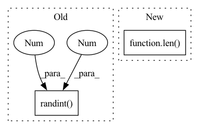

Pattern ID :9007
Before Change
self._learner.download(path="bisenet_camvid")
self._learner.load("bisenet_camvid")
self._colors = np.random.randint(0 , 256 , (256, 3), dtype=np.uint8)
def listen(self):
Start the node and begin processing input dataAfter Change
self.class_names = ["Bicyclist", "Building", "Car", "Column Pole", "Fence", "Pedestrian", "Road", "Sidewalk",
"Sign Symbol", "Sky", "Tree", "Unknown"]
self.colors = self.getDistinctColors(len( self.class_names) ) // Generate n distinct colors
def listen(self):
In pattern: SUPERPATTERN
Frequency: 3
Non-data size: 2
Instances Fragment ID: 32868181
Project Name: opendr-eu/opendr
Commit Name: f71fb87f1d6570e732564b2cccde3bc15e958c65
Time: 2022-09-01
Author: 27914645+tsampazk@users.noreply.github.com
File Name: projects/opendr_ws/src/perception/scripts/semantic_segmentation_bisenet.py
M Class Name: BisenetNode
N Class Name: BisenetNode
M Method Name: __init__(5)
N Method Name: __init__(4)
M Parent Class:
N Parent Class:
M File Name: projects/opendr_ws/src/perception/scripts/semantic_segmentation_bisenet.py
N File Name: projects/opendr_ws/src/perception/scripts/semantic_segmentation_bisenet.py
M Start Line: 42
M End Line: 60
N Start Line: 34
N End Line: 69
Before Change
// batch-wise random inverse normal vector (prob: 0.5)
if random_inv:
random_mask = torch.randint(0 , 2 , (group_xyz.size(0), 1)) .float() * 2. - 1.
random_mask = random_mask.to(unit_nor.device)
if not is_group:
unit_nor = unit_nor * random_maskAfter Change
batch_prob = np.random.rand(offset.shape[0]) < 0.5
random_mask = []
sample_offset = [0] + list(offset.cpu().numpy())
for idx in range(len( sample_offset) - 1):
sample_mask = torch.ones((sample_offset[idx+1] - sample_offset[idx], 1), dtype=torch.float32)
if not batch_prob[idx]:
sample_mask *= -1 Fragment ID: 32868183
Project Name: hancyran/repsurf
Commit Name: e320999634bd03b5020e1af0092663c02c862ba8
Time: 2022-09-18
Author: ranhaoxi@gmail.com
File Name: segmentation/modules/recons_utils.py
M Class Name: AnonimousClass
N Class Name: AnonimousClass
M Method Name: cal_normal(4)
N Method Name: cal_normal(3)
M Parent Class:
N Parent Class:
M File Name: segmentation/modules/recons_utils.py
N File Name: segmentation/modules/recons_utils.py
M Start Line: 28
M End Line: 29
N Start Line: 10
N End Line: 37
Before Change
def plot_one_box(x, img, color=None, label=None, line_thickness=None):
// Plots one bounding box on image img
tl = line_thickness or round(0.002 * (img.shape[0] + img.shape[1]) / 2) + 1 // line/font thickness
color = color or [random.randint(0 , 255 ) for _ in range(3)]
c1, c2 = (int(x[0]), int(x[1])), (int(x[2]), int(x[3]))
cv2.rectangle(img, c1, c2, color, thickness=tl, lineType=cv2.LINE_AA)
if label:After Change
// Plots one bounding box on image img
tl = line_thickness or round(0.002 * (img.shape[0] + img.shape[1]) / 2) + 1 // line/font thickness
COLORS = color_list() // list of COLORS
color = color or COLORS[np.random.randint(0, len( COLORS) )]
c1, c2 = (int(box[0]), int(box[1])), (int(box[2]), int(box[3]))
cv2.rectangle(img, c1, c2, color, thickness=tl, lineType=cv2.LINE_AA)
Fragment ID: 32868182
Project Name: zhiqwang/yolov5-rt-stack
Commit Name: 608aa719b243b8a6d99fe990734458d37b89d851
Time: 2021-01-06
Author: zhiqwang@outlook.com
File Name: utils/image_utils.py
M Class Name: AnonimousClass
N Class Name: AnonimousClass
M Method Name: plot_one_box(5)
N Method Name: plot_one_box(5)
M Parent Class:
N Parent Class:
M File Name: utils/image_utils.py
N File Name: utils/image_utils.py
M Start Line: 11
M End Line: 11
N Start Line: 14
N End Line: 15